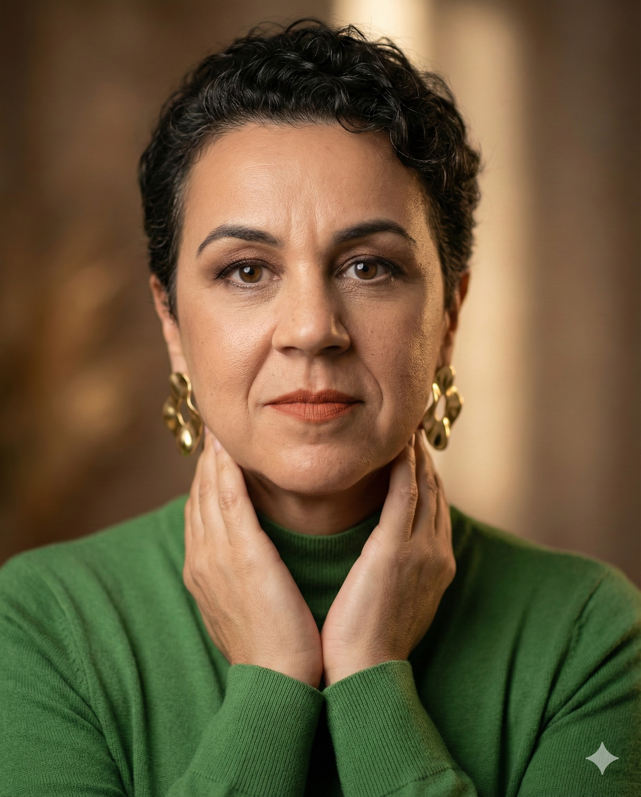

Biografia
Sou professora da Faculdade de Letras da UFMG, onde atuo na área de Linguagem e Tecnologia. Minha trajetória acadêmica concentra-se na interface entre linguística aplicada, tecnologias digitais e inteligência artificial, com interesse especial pelos impactos dessas transformações nos processos de ensino e aprendizagem e formação de professores.
Desenvolvo pesquisas sobre o uso de tecnologias de inteligência artificial na educação, na formação docente e na produção de conhecimento, investigando suas potencialidades, desafios e implicações éticas. Também trabalho com temas relacionados a letramentos digitais e inovação pedagógica em contextos presenciais e online.
Além das atividades de pesquisa, coordeno projetos de ensino, extensão e formação de professores voltados ao uso crítico e criativo das tecnologias digitais, buscando aproximar universidade, escola e sociedade. Meu objetivo é contribuir para a construção de práticas educacionais que integrem inovação tecnológica, reflexão crítica e compromisso social.